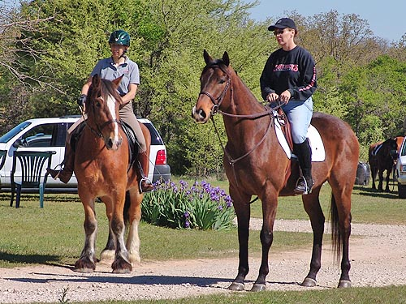

We'd been out to the kennels once
on a cold, windy day. That
time I just led Kasza along behind the
hounds. Today I
planned to ride if everything seemed right.
Walking her around at the kennels
before everyone got there. She was mainly interested in the green grass,
and not concerned about Thuy back at the trailer neighing at her.
Waiting to mount up. This was
my first time on her away from home.
She didn't care that I was nervous.
She liked following behind the
hounds, but I had to be careful that she didn't walk too fast and overtake
them.

Kasza got to meet Ernie and
she ended up being the leader most of the time.
We had to do a lot of stopping
and standing to let the hounds have space.
She was outstanding for all
that was happening around us.
Short, but she sure takes up
leg.
Trying to stay back and not
crowd the hounds.
A great first outing.
I think this is the way to train.
Keep it interesting and give them a job, so they see a purpose. (oh, and
that's my Thuy in the front, whipping in with Mary Ann aboard)